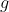
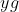

（黄）和
（黄）和 2.3 统计规律与因果关系
吸烟会增加患肺癌、其他癌症以及诸如心脏病等严重疾病的风险。医生提出告诫，劝人戒烟，各种媒体和出版物中不时可以见到有关的报道。这并不是空穴来风，它得到了统计数据的支持。早在 1948—1949 年，英国有两位学者多尔和希尔就研究过此问题。自那时起至 1956 年，他们发表了一系列的报告。他们从伦敦 20 家医院中搜集了 709 名肺癌病人，以及对照组——另外 709 名未患肺癌者的吸烟情况的资料，按吸烟斗还是纸烟、男还是女、是否将烟吞进肺里等指标分类。
经过统计分析，他们发现吸烟与患肺癌呈明显的正相关（即吸烟会增加患肺癌的风险），而纸烟的危害性又大于烟斗。自那时以来，类似的统计资料发表了不少，几乎全部证实了二者有正相关的说法。这个正相关的结论是一个统计性的结论，或把它称为一个统计规律也可以。统计规律有什么特点，怎样去理解它的意义？下面我们要通过本例和其他一些实例来回答这些问题。
首先，统计规律是关于群体的规律。对群体中的个体，情况复杂多样，不是一定就是这样的。拿本例来说，有重度吸烟却终生保持健康者，也有不吸烟而很早罹患肺癌者，不能用这类个别的例子来否定二者有正相关的结论，因为它讲的是群体中的一种趋势。又如，统计资料的分析表明，人的收入与其受教育年限呈正相关。但高学历低收入和低学历高收入的情况，所在多有，这并不否定上述规律的正确性，也是因为它讲的是一种总的倾向性。前些年常提到“体脑倒挂”的说法，并非指存在个别（甚至不少）学历与收入错位的例子，而是指在整个人群（全国，或某地区、部门）中，收入与学历呈负相关，大的趋势有了倒转。
有的读者可能会有疑问：“群体是抽象的，每件事都必须落实到其中的个体，患不患肺癌是每个人的事，这样一种关乎群体中的趋势的规律有何意义？”对此我们是这样理解的。第一，这种规律反映了某种客观存在的现实，有科学意义和认识意义。如在本例中，此规律指出（这正是“正相关”的含义），在抽烟的人群中，患肺癌人数的百分比，要高于不抽烟的人群中的同一百分比，且这百分比还随着抽烟量的增加而上升。这个认识就很有实际意义，它是许多国家和团体发起“戒烟运动”的理由所在。第二，对个人而言，有警诫的作用。我们说这个结论是一个关于群体的规律，并不是说它就与个人无关。天生万物各不齐，个体之间有差异（遗传、环境等）不好比，但就同一个人说，吸烟增加患肺癌的风险这一警告并非不适用。又如，一个人多学一些东西，提高自己的能力，对增加自己的收入总会有好处。这与在社会上确实存在学历高而收入低的情况，并无矛盾之处。
“统计规律”这个提法的启示是，教人看问题不可绝对化，因而有思想方法上的教育意义。习惯于从统计规律看问题的人，在思想上不拘执一端。他既认识到一种事物从总的方面看有其一定的规律在，也承认存在例外的个案。二者看似矛盾，却是并行不悖的，它反映了我们生活在其中的世界的多样性和复杂性。甚至可以说，如果不是如此，我们处处被一些铁板钉钉的规律所支配，则生活将变得何等单调无味。说起来这不过是一个初浅的常识，但事实表明，并非每一个人都能习惯于这种思想方式，使其成为一种本能。常听见有这种争论：当甲提出某种说法时，乙就指出一个反例，证明其所说不实。统计学家对此的看法是：甲的说法可以是一个统计性的规律，它需要大量的统计资料的证明或证伪，乙指出的个别反例不一定能构成否定甲的说法的充分理由。
从反面讲，也可以说统计规律这种东西的出现，反映了人类认识上的局限性，反映了人类对偶然性的作用无力完全掌握，也反映了人类在这种局限性的约束下认识自然的一种努力，即在偶然性造成的纷乱无序的状态下，尽量从中找出一些虽不完善，但具有规律性的品格的东西。拿本例来说，人人都希望能有这样一个公式，当你按照这个公式生活时，可保证你不患肺癌。这种公式现在没有，将来什么时候会有也难说，如果你要求把事情搞到这样确切的程度，则只好什么也不做。究其原因，还是由于个体差异即偶然性的作用。“不吸烟能减小患肺癌的风险”这类统计规律的获得，是一项有用的成果，虽然它有其局限性。
其次，统计方法只是从事物的外在数量表现上去研究问题，通过对数据的分析，揭示可能有某种规律性的东西存在，而不涉及事物的质的规定性。换句话说，统计分析的结果可以告诉你，从观察和试验资料来看事情是怎样的，而不能告诉你为什么会这样。拿吸烟与患肺癌的关系来说，统计分析不能告诉你为什么吸烟是患肺癌的危险因子，那是要由医学家去研究的问题。又如，通过抽样检验对所得数据进行统计分析，表明生产同一产品（如电视机）的甲、乙两厂中，甲厂产品质量优于乙厂。这纯粹是从所掌握的数据上得出的结论，它不能告诉你为何甲厂产品质量会好一些，这可能是由于它的设备新、管理好、工人素质高等，具体如何，要做进一步研究才能确定。要指出的是，说甲厂产品质量优于乙厂，这也是一个统计性的规律，它可以通过统计学的概念和术语，以某种形式表述出来。但当从两厂各拿出一件具体产品来比较时，并不能保证甲厂那一件一定好一些。
“知其然而不知其所以然”一般是一种含有贬义的说法，用统计分析方法得出的结果，就属于这种情况，其意义何在，有必要加以说明。下面从两个方面来讨论这个问题。
从应用上说，一旦我们从数量的表层发现了某种有实用价值的规律性，就可立即将其付诸应用，至于其机理问题，可留待学者们从长研究。有许多具实效的药物、偏方和治疗方法，经过一定范围内的使用验证确有成效而得到推广，其机理有的并无满意的解释。在工业中，通过配方、工艺上的改进而得以改善产品质量的例子很多，这些在起初都是经过多次试验而总结出的结果，经过生产实践证明其有成效而得到推广使用，即使其理论根据一时未能完全探明，也无妨其实用——当然，这不是说不必去做出努力以弄清其“所以然”。因为，明白了有关的机理，可以指示进一步努力的方向。
至于在以认识自然为目的的基础研究中，目标本来就在于探求事情的“所以然”，当然不能停留在事物表层上。但即使在这类活动中，统计方法仍有其不可缺少的作用。事物本质的秘密往往隐藏在深处，不是轻易能够被揭示的，但它可能以一种曲折间接的方式，在某些数量之间的关系上，露出冰山的一角。许多重大的发现，都是先通过观察或试验积累数据，对之进行统计分析，其结论指示了向哪个方向去探索。
通过表面上的数量关系的分析，而推动科学上重大发现的一个著名的例子，是孟德尔遗传定律的发现。而对现代生命科学有决定性影响的基因学说的提出，就是建立在这个发现的基础上。孟德尔是奥地利生物学家，他的上述成果发表在 1865 年的一篇论文中。他用豌豆做试验，这种豆有黄、绿两种颜色，孟德尔分别培养了一个黄色的纯系和一个绿色的纯系，其每一代所结的豌豆全部保持同一种颜色。孟德尔将这两个纯系进行杂交，发现这种杂交品种豆子全是黄色，看上去与黄色纯系并无不同，但在将这种杂交品种再进行一次杂交时，孟德尔发现这第二代杂交豆子的颜色黄、绿都有，其比例接近 3∶1。孟德尔将这个试验重复了很多次，每次都得到类似的结果。
如果他将这项工作就进行到此处为止，则这个 3∶1 的统计性规律也可算是一项科学的发现，但意义毕竟就比较有限了，因为它只涉及这么一件具体事情。但这个表面上的统计规律性启发了孟德尔去着手提出一种假说来解释这个现象。具体说，他假定有一种后来被称为“基因”的实体控制着豆子的颜色，这实体有两个状态（被称为等位基因）：（黄）和

（绿），共组成 、
、、 4 种配合，称为基因型。前 3 种配合，即其中至少有一个 的，使豆子呈黄色，唯有第 4 种配合使豆子呈绿色（在遗传学上，称 是显性的而 是隐性的，意思是只要有 在， 的作用就退隐了）。根据这个假说，孟德尔的试验结果就得到了圆满的解释。黄、绿纯系的基因型分别是 和 ，杂交第一代只有 一种可能的基因型，故全呈黄色。但第 2 代杂交是 配 ，每方出一个基因，共有 4 种同等的可能性，即 ，，，，前 3 种呈黄色而只有后一种呈绿色。这解释了第 2 代杂交豆子中黄、绿两种颜色之比近似为 3∶1。表 2.1 是孟德尔试验中的一些具体数据。表 2.1 孟德尔的试验数据
| 植株 | 1 | 2 | 3 | 4 | 5 | 6 | 7 | 8 | 9 | 10 | 总计 |
| 黄 | 25 | 32 | 14 | 70 | 24 | 20 | 32 | 44 | 50 | 44 | 355 |
| 绿 | 11 | 7 | 5 | 27 | 13 | 6 | 13 | 9 | 14 | 18 | 123 |
就每一株来说，绿色豆子占该株豆子总数的比例接近 1/4，但有些差距，有的株差距还不太小，全部 10 株绿色豆子所占比例为 123/ (355+123)≈25.7%，就相当接近 1/4。为什么这个比例只是接近而不是严格等于 1/4 ？这就要归结于偶然性的作用。每个植株豆子都不多，偶然性的作用就比较明显，10 株合起来，豆子总数加大，偶然作用彼此抵消了，1/4 的比例就更突出。如果植株更多，这比例与 1/4 的差距就会更小。
“基因”这个名称是英国学者贝特森在 1909 年提出的，自此，基因学说主导了 20 世纪生物学尤其是遗传学的发展，其意义无可估量。到 1950 年，基因的存在在分子的水平上得到证实，可以说是给从孟德尔开始的这一项重要研究工作画上了一个圆满的句号。可以看出，统计方法在其中起了先导的作用。奥地利著名的现代物理学家薛定谔有一段话，很中肯地表达了统计方法在科学研究中所起的作用（转引自陈善林等著《统计发展史》，第 245 页）：“在最近 60 年或 80 年中，统计方法和概率计算进入了一支又一支的科学……开始时（使用）这个新式武器总是伴随着一个借口，它是为了救治我们的缺点，我们对细节的无知，或无力应付大量资料……但是似乎无意中，我们的态度就改变了，我们意识到，个别的情况完全没有兴趣，不管关于它的详细知识是否能够得到，不管它提出的数学问题能否应付。我们明白，即使它可以做到，我们也会因跟踪成千的个别情况（而导致的纷乱状态）2，最后也不能得出一个比统计数量更好的结果，我们实际感兴趣的乃是统计机制的运用。”薛定谔的这段话所指的就是，在涉及大量个体的群体的研究中，统计性规律的意义和作用。群体中的个体数太多，即使你有能力对其一个个加以跟踪研究，也会因为个体的差异性而呈现的纷乱状态，得不出什么有用的结论。相反，一个或一些反映统计规律性的统计数量对我们更有用。例如，调査了成千上万的人的身高体重状况，都登记在一本册子上，杂乱无章，看不出什么问题。而一个反映统计规律的粗糙公式——体重 = 身高 - 105，则对我们有用得多，虽然这公式远非确切。薛定谔所说“我们实际感兴趣的乃是统计机制的运用”，指的正是“通过个别情况的研究从中总结出统计规律性”的方法。而薛定谔指出，这种规律性有助于我们探求事物的实质。
2括号内的文字为作者所加。
薛定谔说这个话是在 1944 年。当时，电子计算机尚未发明，人们处理大量数据的能力还很有限。从今天的情况看，他的论点就显得更为贴切。在有计算机之前，有不少统计方法，因为涉及的计算量太大，人力难于完成，因而实际上无法应用。现在，像处理大气污染这类问题，牵涉几十个因素和极大量的数据，在以往是不能想象的，如今用计算机可在很短的时间完成。1858 年，英国为绘制本国地图，做了一次大型的大地测量，收集了极大量的数据，用最小二乘法处理这些数据，涉及解 920 个未知数的线性方程，整个工作分两组人员独立进行，花了两年半的时间才完成。如今在电子计算机上，这类的计算已算是比较轻而易举的事情。这种情况的出现，使基于数据的统计分析方法在探究自然的奥秘中，起着比以往更大的作用。
以上的论述着重在替统计分析方法“评功摆好”，那么，有没有负面的因素呢？我们说有，不过要赶紧申明的是，这种负面因素并非出自方法本身，而是在于方法的不当使用甚至滥用。多年前有一位知名的美国统计学家来中国访问，他曾半开玩笑地说：“什么是统计学家？有人说，统计学家是一群骗子，他们可以用数据证明任何想要证明的事情。”这是指对统计方法的滥用，甚至是为了自私的目的而损害公共利益，其中包括伪造数据，所谓“官出数字，数字出官”，指的就是这件事。即使不伪造数据，只要通过有偏向地采取数据，也可以引导出所想要的结论。例如在宣传某种药物或保健品的功效时，只提正面的例子，对无效甚至有反面效果的例子略而不提。更多的情况是使用不当。这首先是数据的采集。数据的采集方式必须严格符合随机性等一系列的要求，才能用作统计分析的原料，不然就会产生误导。关于这一点，本书后面的章节会有一些实例来说明。其次是效应或差距的显著性问题。这指的是如下的情况：有的试验的目的是为了证实某项措施有效（例如，一种治病的新方法，其疗效比现有的方法高），但试验规模很小，或试验误差太大，因而偶然性影响增大，从数据上显示的差距，其实不过是出于偶然性的作用而非实质的。这一点用严格的统计检验方法本是可以鉴别的，但因未做这种严格的统计检定，就按其表面差距以成果的形式报道出来，而产生误导。
我们不时地从媒体及出版物中，看到对同一件事的两种不同的说法，都有其统计资料的根据：盐吃多了易导致高血压，但也有说二者并无关联的；糖是健康的杀手，但也有要“为糖平反”的。类似这种例子很多，尤其是涉及与人体有关的。那么，为何这些截然不同的说法，都有其统计资料的支持呢？一方面，这需要仔细审查其数据的获得方式，以及数据的规模。因为，在有些问题，特别是与人体有关的问题中，个体的差异太大，局部的数据，即使其来源正当，统计分析方法也合乎规范，但依靠规模不大的数据分析所得的结论外推至于普遍，常会发生问题。例如，根据法国人喝葡萄酒多而心脏病患者少，就推出喝葡萄酒有助于降低心脏病发病率的结论。可是首先，法国人心脏病发病率低是否与多喝葡萄酒有关，是一件未经严格统计分析证实的事情，还有待做进一步的研究。其次，即使这一说法对法国人成立，它是否必然也适用于其他人，尤其是在地域上、体质上和生活习惯上与法国人都有较大差异的东方人，这也需要统计资料的证实。
总之，统计方法是一个很有用的方法，但其单从表面数量关系着眼的特点，使其有易于被滥用、误用和夸大的危险。统计学的任务就是教人怎样去正确使用这种方法，恰当而有分寸地解释其结论，对种种统计分析的结果做出正确的评估（这需要对其数据来源及使用的方法有了解）而避免误导公众或为人所误导。
统计规律常以“某些事物之间有关联”的形式出现。吸烟与患肺癌的关联、学历与收入的关联等都是例子。要注意的是，这种关联性不一定意味着因果性。当甲、乙两个事物有关联时，可能甲为因乙为果，或乙为因甲为果，也可能什么都不是，而是甲、乙二者都受到某一尚不了解的因素的影响而产生关联。
《南方周末》1998 年 8 月 14 日刊载了一则报道，说华盛顿大学医学院的专家在对 1000 人的检查中发现，其中耳垂有皱褶的有 373 人，在这 373 人中，查出患冠心病者有 275 人，比率约为 73.7%，远高出一般人中冠心病患者的百分比，显示二者之间可能存在关联（这一点尚待更多的资料证实）。但二者之间是否有何因果关系则难言。不能想象耳垂皱褶之“因”导致了冠心病之“果”，冠心病导致耳垂皱褶的根据也非明显。是否有何隐蔽的因素同时导致这二者？这是一个可以设想的解释，究竟如何，有待进一步的研究。
《科学时报》1999 年 3 月 10 日的报道称：“大城市里拥挤、嘈杂、紧张而充满压力的生活方式，是导致人们心脏病发作的主要原因。”又说：“美国科学家的研究表明，纽约是最容易引发心脏病的大都市。”
报道没有揭示美国科学家做出该项结论所依据的数据。说到因果关系，从常识看，也觉得有充分的理由相信前者是因而后者是果，不过也还有进一步考虑的余地。笔者曾去过上海、香港、东京、纽约等大城市，发现从拥挤、嘈杂、紧张等方面看，上海、香港、东京未见得比纽约好，但这些地方心脏病发病率也不高于他处。
最有名的例子，恐怕要算前面讨论过的吸烟与患肺癌的关联问题。根据多尔和希尔的报告，《英国医学杂志》于 1957 年 6 月 29日发表社论，肯定了吸烟对健康的损害作用，并认为有必要在公众中广为宣传此事。这招致了当时在英国也是全世界最著名的统计学家和遗传学家费歇尔的质疑。费歇尔是 20 世纪现代统计学的主要奠基人，现今仍在使用中的一大批重要的统计方法就是出自他的首创。他因在科学研究上的卓越贡献，于 1929 年被授予爵士称号，他的质疑当然非同小可。在 1957—1958 年这两年期间，他为此与一些人卷入了一场论战，论战以在《英国医学杂志》上发表信件的形式进行。
费歇尔从多尔—希尔数据的分析中，发现了一件有些出人意料的事：在吸烟者中，把烟吸进肺里者，其患肺癌的风险显著地低于那些不把烟吸入肺里者，显著度高达 1%。后一语的意思是，“把烟吸入肺里者患肺癌的风险低”这一结论犯错误的机会低于 1%。如果烟真的对肺有伤害，那么，将烟吸入的危险性理应更大，这是一个与“二者（吸烟与患肺癌）有因果关系”的论断相矛盾之点。
这还不是费歇尔主要的质疑之处。他对吸烟与患肺癌的关联提出了一种可能的解释，认为二者可能受到同一基因的控制，即某些人有一种基因，它同时注定了这些人：1. 爱抽烟；2. 易得肺癌。如果这一解释成立，则吸烟与否并不增加或减小患肺癌的风险，人们也不必为此而戒烟。可见这并非一个纯学究式的问题，而是有其巨大的现实意义。
费歇尔的主张属于下面的模式，当然这也是一切科学工作者所应遵守的模式：如果你发现一种现象，它可能有甲、乙、丙、丁等解释。无论用甲去解释这个现象的理由有多充分，如你不能排除乙、丙、丁等的可能性，则这一解释还不能最后确立。关于上述问题，费歇尔做了一些努力。他找了一些同卵双生者和异卵双生者，调査了他们的吸烟习惯，发现前者极相似而后者的相似度差得多，这似乎支持了“吸烟习惯系受基因控制”的论点。但由于取样上的困难（同卵及异卵双生的样本难得，其中患肺癌者更稀少，不足以进行有效的统计分析），费歇尔也未能找到支持上述论点的充分证据。可以说，此问题在科学上讲至今仍属悬而未决，不过大多数人（包括医学家）倾向于相信，吸烟确是导致肺癌的一个危险因子。
应当指出的是，统计规律未必蕴含因果关系，这一点，是统计方法的本性而非其缺陷。寻找因果关系是各类专门学科的任务。统计学作为一门数学学科，统计方法作为一种研究问题的工具，不可能把寻求万事万物的因果关系这样复杂的任务担当起来。但它通过数量上的分析揭示表面关联的存在，起着为专门研究指示努力的方向的作用。